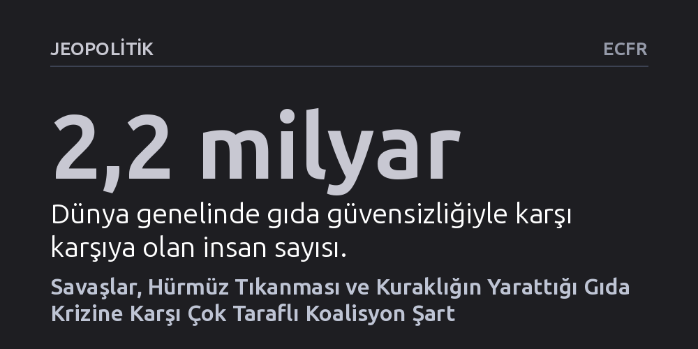

JEOPOLITIK · ECFR · 2026-09-08
Ukrayna'daki savaş, Hürmüz Boğazı'ndaki gübre ablukası ve rekor kuraklık küresel gıda krizini hızla derinleştiriyor. Bu felaketi önlemek, Avrupa'nın arabulucu güçleri bir araya getirerek Karadeniz ve Hürmüz'de ticareti güvenceye alacak acil bir koalisyon kurmasına bağlı.
Gıda krizinin salt bir kuraklık ya da arz sorunu olmadığını; Karadeniz ve Hürmüz'deki askeri tıkanıklıkları aşacak çok taraflı bir diplomasi kurulmadıkça açlığın önlenemeyeceğini gösteriyor.

Küresel gıda sistemi, birbirini besleyen üç büyük krizin aynı anda patlak vermesiyle tehlikeli bir darboğaza sürükleniyor. Dünya genelinde gıda fiyatları 1999 yılındaki tarihi dip seviyelerine kıyasla hâlihazırda yüzde 75 daha yüksek seyrediyor ve yaklaşık 2,2 milyar insan gıda güvensizliğiyle mücadele ediyor. Bu kırılgan tablonun üzerine şimdi üç yeni darbe bindi: Rusya ile Ukrayna arasındaki savaşın tarımsal ihracatı felç etmesi, Hürmüz Boğazı'ndaki tıkanıklığın gübre akışını kesmesi ve tarihin en şiddetlilerinden biri olması beklenen "Süper El Niño" iklim olayı.
Bu tehditler sıradan bir piyasa dalgalanmasının çok ötesinde sonuçlar doğuruyor. Pasifik Okyanusu'ndaki sıcaklık anomalileri Güney Afrika'da kavurucu kuraklıklara yol açarken, Güney ve Güneydoğu Asya'da tarımsal üretimi ciddi ölçüde buduyor. 2026-2027 sezonunda küresel buğday üretiminin yüzde 3 oranında düşmesi bekleniyor; bu düşüş Avrupa Birliği'nde yüzde 8'i, Avustralya'da yüzde 12'yi ve Arjantin'de yüzde 19'u buluyor. Aynı anda pirinç fiyatlarının da tırmanışa geçmesi, temel gıda maddelerine erişimi milyonlarca insan için imkânsız hale getirecek bir beslenme felaketine zemin hazırlıyor.
Krizin mekanizmasını anlamak için ticaret yollarına bakmak gerekiyor. Normal koşullarda Rusya ve Ukrayna tek başlarına dünya buğday ihracatının yüzde 30'unu, mısırın yüzde 20'sini ve ayçiçek yağının yüzde 60'ını tedarik ediyor. Ancak karşılıklı askeri saldırılar bu can damarını kesti. Rusya'nın Ukrayna limanlarını ve tahıl altyapısını aralıksız vurması Ukrayna'nın ihracatını yüzde 75 oranında düşürdü. Buna karşılık Ukrayna'nın Karadeniz ve Azak Denizi'ndeki liman tesisleri ile Rus gemilerini hedef alan operasyonları, Rusya'nın tahıl ihraç kapasitesinin yüzde 90'ından fazlasını devre dışı bıraktı. Üstelik Tuna Nehri'ndeki su seviyesinin düşmesi, alternatif nehir koridorlarını da tıkıyor.
Deniz yollarındaki ikinci büyük tıkanıklık ise Hürmüz Boğazı'nda yaşanıyor. Hürmüz, tarımsal verimin birincil belirleyicisi olan azotlu gübrelerin dünyadaki ana geçiş noktası konumunda bulunuyor. Aynı zamanda fosfatlı gübrelerin vazgeçilmez bileşeni olan küresel kükürt arzının yaklaşık yarısı bu rotadan taşınıyor. Boğazın kapanmasıyla birlikte dünyadaki deniz yolu gübre sevkiyatının yaklaşık üçte biri tarlalara ulaşamaz hale geldi. Özellikle gübre fiyatlarının halihazırda en yüksek olduğu Sahra Altı Afrika ve Güney Asya'daki küçük üreticiler tarlalarını gübreleyemiyor; bu durum tarımsal verimsizliği gelecek yıllara yayacak bir zincirleme reaksiyon başlatıyor.
Mevcut gıda krizini geçmiştekilerden ayıran en vahim boyut, uluslararası sistemdeki derin siyasi felçtir. Hatırlanacağı üzere 2022 yılında benzer bir kriz baş gösterdiğinde, Birleşmiş Milletler Genel Sekreteri António Guterres ve Türkiye'nin arabuluculuğunda varılan Karadeniz Tahıl Girişimi sayesinde ticaret kanalları açık tutulabilmişti. Ancak bugün uluslararası alanda böylesi bir uzlaştırıcı irade ortada yok. Birleşmiş Milletler kurum içi bir liderlik değişimine hazırlanırken, Amerika Birleşik Devletleri çok taraflı örgütlere mesafe koymuş durumda ve krizi göğüsleyecek küresel bir diplomatik merkez bulunmuyor.
Bu siyasi başıboşluk, tarihsel iklim krizlerinde sıkça görülen ticaret korumacılığını yeniden alevlendiriyor. Üretim düşüşünden endişelenen ülkeler panikle ihracat kısıtlamalarına başvuruyor; örneğin Hindistan'ın attığı adımlar Güneydoğu Asya pazarlarını doğrudan sarsıyor. İhracat yasakları fiyatları daha da şişirirken, çiftçilerin kâr marjlarını eritiyor ve gelecekteki üretime yönelik yatırımları baltalıyor. Malavi gibi bütçesi tükenen ülkelerin gübre sübvansiyonlarını kesmek zorunda kalması, yerel yönetimlerin bu şoklara karşı ne kadar savunmasız olduğunu gözler önüne seriyor.
Bu çok boyutlu tıkanıklığı aşmak, ancak sahici bir diplomatik inisiyatifle mümkün olabilir. Avrupa ülkeleri, İngiltere ve Ukrayna'yı da yanlarına alarak acil bir küresel koalisyon oluşturmalıdır. Bu koalisyon iki ana sütuna dayanmalıdır: Bir tarafta açlık tehdidiyle en çok burun buruna gelen Küresel Güney ülkeleri (Sahra Altı Afrika, Güney ve Güneydoğu Asya), diğer tarafta ise İran ve Ukrayna çatışmalarının tarafları üzerinde gerçek bir etkiye sahip olan Türkiye, Çin, Hindistan ve Brezilya gibi kilit aktörler yer almalıdır.
Planın sahada hayata geçirilmesi gereken üç somut ayağı bulunuyor. İlk olarak, Karadeniz'de tahıl taşıyan sivil gemileri ve liman tesislerini saldırılardan koruyacak kısmi bir askeri ateşkes sağlanmalıdır. İkinci olarak, Hürmüz Boğazı'nda gübre geçişini güvenceye alacak bir mutabakata varılmalıdır; bu uzlaşmada İran'ın kendi gübre ihracatı yaptırımlardan muaf tutulmalı ve karşılığında İran'ın buğday ve pirinç ithalatı garanti edilmelidir. Üçüncü olarak ise Birleşmiş Milletler Dünya Gıda Programı'nın bütçe açığı kapatılmalı ve CGIAR öncülüğünde kuraklığa dayanıklı tarım tohumları ve toprak verimliliği için üç yılda 500 milyon dolarlık acil bir finansman fonu devreye sokulmalıdır.
Böylesi bir diplomatik girişimin önünde ciddi jeopolitik engellerin bulunduğu açıktır. Hem Ukrayna hem de Orta Doğu cephesindeki çatışmaların daha da tırmanma riski yüksektir ve başta Rusya olmak üzere tarafların yerleşik kırmızı çizgilerinden taviz vermesi kolay olmayacaktır. Ayrıca krizden etkilenen ülkelerin çıkarları ve siyasi yönelimleri son derece parçalıdır; hiçbir küresel güç tüm bu aktörleri tek başına ikna etme kapasitesine sahip değildir.
Buna rağmen önerilen girişim, çatışan tüm taraflar masaya hemen oturmasa dahi somut fayda üretecek "kayıpsız" bir stratejidir. Çiftçilere kuraklığa dayanıklı tohum ve teknik destek ulaştırılması, diplomatik müzakereler sürerken bile sahada milyonlarca insanın aç kalmasını önleyebilir. Dahası, gıda güvenliği konusunda sağlanacak küçük bir ortak ilerleme, Karadeniz ve Hürmüz'deki askeri gerilimlerin yumuşatılması için diplomatik bir kaldıraç işlevi görebilir. Parçalanmış bir dünyada ortak hareket etme cüretini göstermek, krizin yıkıcı etkilerini dizginlemenin tek gerçekçi yoludur.